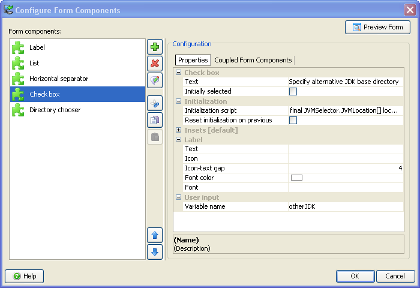
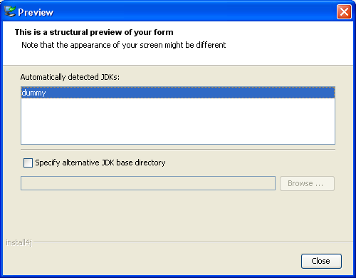

Form Screens


Form Screens |
|
Standard screens that have a configurable form include the "Additional confirmations" and the "Finish" screen. In addition, install4j offers a customizable form screen (similar to the "Additional confirmations" screen) and a customizable banner form screen (similar to the "Finish" screen). For screens that have a configurable form, a "Form Components" tab is shown in the "Configuration" section of the screen configuration. The actual configuration of the form components is performed in a separate dialog:

By default, a form is top-aligned and fills the entire available horizontal space. You can change this default behavior in the properties of the containing screen. For example, for a set of radio buttons that should be centered horizontally and vertically, the "Fill horizontally" and "Fill vertically" properties of the screen must be set to "false".
install4j offers a large number of form components that represent most common components available in Java and some other special components that are useful in the context of an installer. All components that expect user input have an optional leading label. The components themselves are left-aligned on the entire form. If you leave the label text empty, the form component will occupy the entire horizontal space of the form.
Every form component has configurable insets. For vertical gaps that are meant to separate groups of form components, consider using a "Vertical spacer" form component since it makes the grouping clearer and allows to to reorder form components more easily.
You can preview your form at any time with the [Preview Form] button. The preview dialog performs all variable replacements of compiler variables and custom localization keys, but not of installer variables. No initialization scripts are run. The preview is intended to give you quick feedback about visual aspects of your form. It does not show the actual screen where the form mights be smaller and other elements might be present. For example, the "Finish" screen is a banner screen where form occupies a relatively limited space in the bottom right corner and is intended to show a few check boxes at most.

Every form component always has its preferred vertical height. For some form components such as the "List" form component, this preferred vertical size is configurable. If the vertical extent of the form exceeds the available vertical space, a scrollbar is shown.
If a form component can accept user input, you need some way to access the user selection afterwards. install4j saves user input for such form components to the installer variable whose name is specified in the "Variable name" property. That variable can then be used later on, for example in condition expressions for screens and actions. If you have a check box that saves its user input to a variable called "userSelection", the condition expression
context.getBooleanVariable("userSelection")
will skip the screen or action for which that condition expression is used. The user selection in
form components is written to the variables before the validation expression for the screen is called.
If you have a text field that saves its input to the variable "fileName", the validation expression
Util.showOptionDialog("Do you really want to delete " + context.getVariable("fileName"),
new String[] {"Yes", "No"}, JOptionPane.QUESTION_MESSAGE) == 0
used on the same screen will block the advance to the next screen if the user answers with "No".
The values of installer variables accomodate the general type java.lang.Object. Every form component saves its user input in its "natural" data type, for example:
The description of the value type for each form component that accepts user input is shown in the registry dialog when you select the form component.
For each form component, install4j offers several properties that allow you to customize its initial state. However, there may be other advanced properties or a more complex logic is required for modifying the form component. For this purpose, the "Initialization script" property is provided. Form components can expose a well-known component in the initialization script that allows you to perform these modifications. This so-called "configuration object" is usually contained in the form component itself. For example a "Check box" form component exposes a configurationObject parameter of type javax.swing.JCheckBox and a "Text field" form component exposes a javax.swing.JTextField.
As with actions and screens in general, the possibility that the user moves back and forth in the screen sequence presents a dilemma to install4j. Any form components that accepts user input has a configurable initial value and any form component can have an initialization script. This initialization is performed when the user enters the screen for the first time. Should this initialization be performed again when the user moves back and then enters the screen once again? Since install4j does not know, it initializes every form component only once by default. This policy can be changed with the "Reset initialization on previous" property for each form component.
|
|